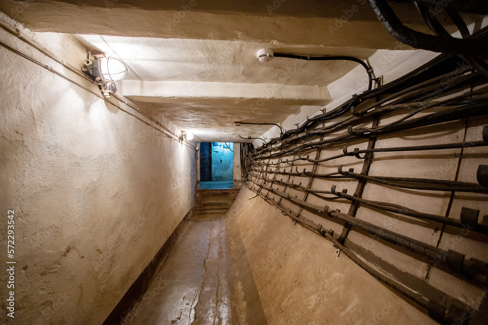

Dentro de la Base
Lo lograste. Estás dentro. El guardia yace inconsciente detrás de unos cajones. Tienes su uniforme puesto para camuflarte mejor.
El pasillo principal se divide en dos direcciones. A la izquierda, escuchas el sonido de radios y equipos electrónicos: debe ser el cuarto de comunicaciones. A la derecha, según el plano que memorizaste, están los archivos clasificados.
Si vas a comunicaciones podrías sabotear sus sistemas antes de buscar los documentos, lo que te daría más tiempo. Pero también es más riesgoso.
Estado de la misión
Etapa 3 de 5: Navegando la base
Revisar el plano memorizado de la base
Planta baja: Entrada, garitas, pasillo principal, cocina, cuarto de comunicaciones. Primera planta: Dormitorios de soldados, sala de interrogaciones, celda de prisioneros. Segunda planta: Sala de mandos, archivos clasificados, despacho del comandante.